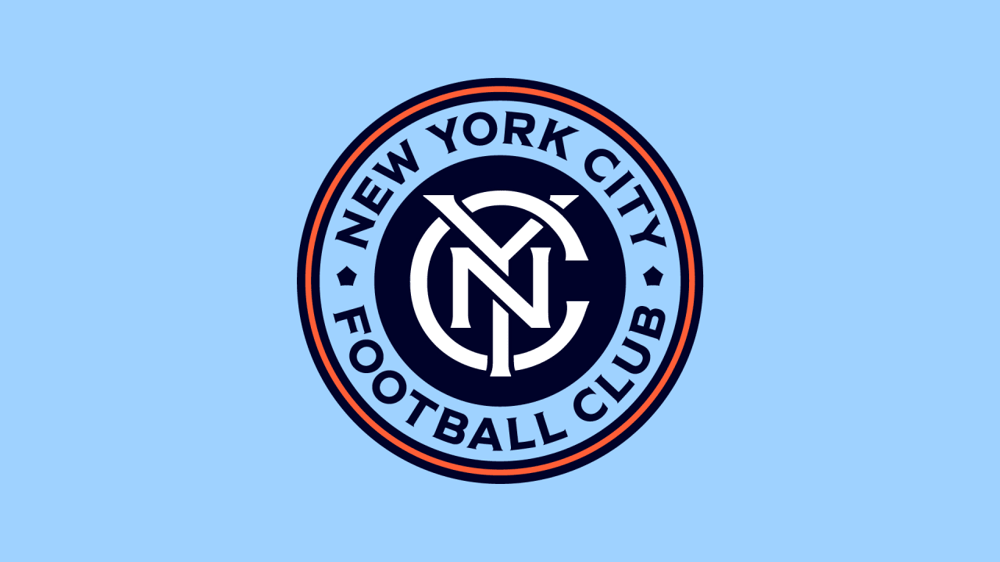
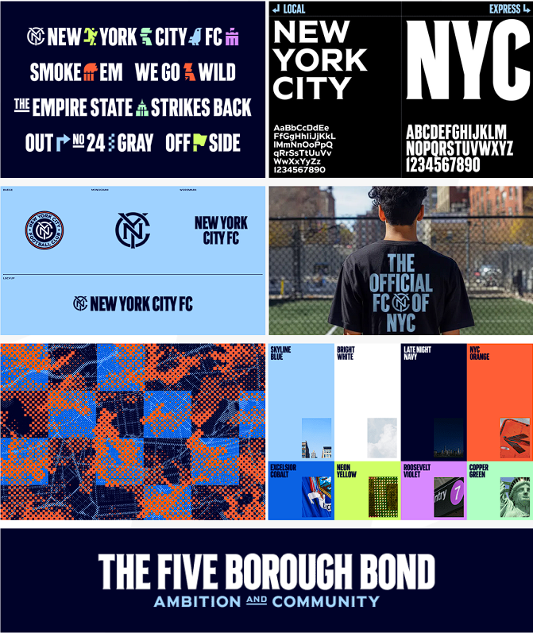

New York City FC presenta una actualización de su emblema, manteniendo su icónica identidad mientras introduce mejoras sutiles en diseño y tipografía. El nuevo escudo, diseñado por el tipógrafo Tobias Frere-Jones, refuerza la conexión con los fans y celebra el legado del club, preparándose para un futuro ambicioso.
El New York City FC ha presentado recientemente un nuevo logotipo como parte de una actualización de su identidad visual, en preparación para la temporada de la MLS 2025. Este rediseño es significativo, ya que es la primera actualización importante desde que el club se unió a la Major League Soccer en 2015, y tiene como objetivo reforzar su conexión con la ciudad de Nueva York mientras moderniza la imagen del club.
El nuevo escudo mantiene los elementos esenciales del logotipo original, pero introduce varios cambios notables. El monograma "NYC" se ha actualizado con letras serif más gruesas y estilizadas, lo que le da un aspecto más audaz. Además, el diseño del círculo externo ha sido refinado para mejorar la claridad y hacer que el monograma sea más prominente. Se ha eliminado el círculo blanco que rodeaba el monograma, y los anillos de color azul claro y naranja se han engrosado, lo que proporciona un contraste visual más fuerte y una presencia más impactante.
Se ha incorporado una tipografía personalizada inspirada en la señalización histórica del metro de la ciudad de Nueva York en el texto externo, añadiendo un toque local distintivo al logo. Esta decisión de diseño no solo rinde homenaje a la rica historia de la ciudad, sino que también se alinea con el objetivo del club de consolidar su identidad dentro de la vibrante comunidad neoyorquina.
El rebranding es parte de un esfuerzo más amplio para establecer una identidad visual cohesiva que incluya marcas modulares y un sistema de logo más versátil. Esta estrategia garantiza que el club pueda representarse de manera efectiva en diversos materiales de marca, mejorando su reconocimiento y atractivo.
